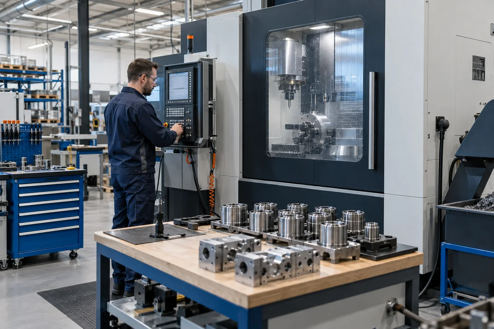

Planeación: qué, cuánto y cuándo.
Relaciona la demanda con inventarios y capacidad disponible para definir necesidades de compra y fabricación. Permite analizar la carga prevista antes de convertirla en un programa detallado.
PLANEACIÓN Y PROGRAMACIÓN AVANZADA
Demanda, capacidad y restricciones. La perspectiva que necesitas para organizar lo que sigue.
Explorar una demoDEL ESCENARIO A LA DECISIÓN
Un pedido urgente, un recurso detenido o una nueva fecha de entrega cambian el equilibrio del programa. Explora alternativas antes de llevarlas a producción.
PROGRAMACIÓN DE UNA ORDEN
Ejemplo · turno de mañana| Recurso / hora | 08–09 | 09–10 | 10–11 | 11–12 |
|---|---|---|---|---|
| Preparación | Ajuste | |||
| Centro CNC | Mecanizado · 2 h | |||
| Metrología | Inspección | |||
Preparar → mecanizar → inspeccionar
Si cambia la disponibilidad del CNC, se revisa también el inicio de la inspección y la fecha prevista de terminación.
Capacidad disponible, calendarios, materiales y prioridades definen qué alternativas son viables.
Revisa cómo una modificación afecta la secuencia, la carga de recursos y las fechas previstas.
Planeación y producción revisan una misma propuesta antes de comunicar el siguiente paso.

DOS NIVELES DE DECISIÓN
Relaciona la demanda con inventarios y capacidad disponible para definir necesidades de compra y fabricación. Permite analizar la carga prevista antes de convertirla en un programa detallado.
Asigna maquinaria, materiales y personas a las operaciones. Considera restricciones, prioridades y tiempos de preparación para organizar el trabajo de una manera que la planta pueda ejecutar.
UN MODELO DE TU REALIDAD PRODUCTIVA
Considerar la disponibilidad de recursos ayuda a identificar sobrecargas y cuellos de botella.
El orden de los trabajos influye en cambios de producto, tiempos de preparación y utilización de equipos.
Cambios de demanda, disponibilidad o prioridades requieren revisar el programa y sus efectos.
Las transacciones y catálogos del sistema de gestión aportan contexto para planear y programar.
PERSPECTIVA DE MEJORA
La tecnología conecta las decisiones con los objetivos de tu operación.
Cifras publicadas en el sitio de referencia de Antal M. Su alcance depende del proceso, los datos y la implementación; no constituyen una garantía de resultados.
ANTES DE IMPLEMENTAR
Para evaluar una solución APS, revisamos contigo los procesos y la base de información disponibles.
Pedidos, pronósticos y fechas requeridas para entender las prioridades del plan.
Centros de trabajo, turnos, materiales y preparaciones que condicionan la programación.
ERP, inventarios y estructura de datos para definir el intercambio de información.
RESOLVEMOS TUS DUDAS
La integración de datos se revisa de acuerdo con los sistemas y el alcance de tu proyecto.
La implementación contempla configurar campos, tablas y procesos según los requerimientos de tu operación.
Sí. Un consultor puede acompañarte en una demostración de concepto.
Un APS ayuda a coordinar restricciones y recursos, y reduce el trabajo repetitivo de programación. Los resultados dependen de la configuración y los datos disponibles.
DE LA COMPLEJIDAD A LA CLARIDAD